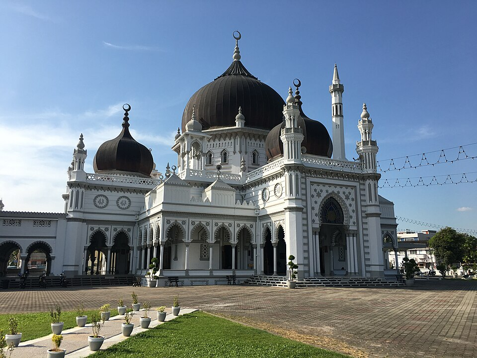
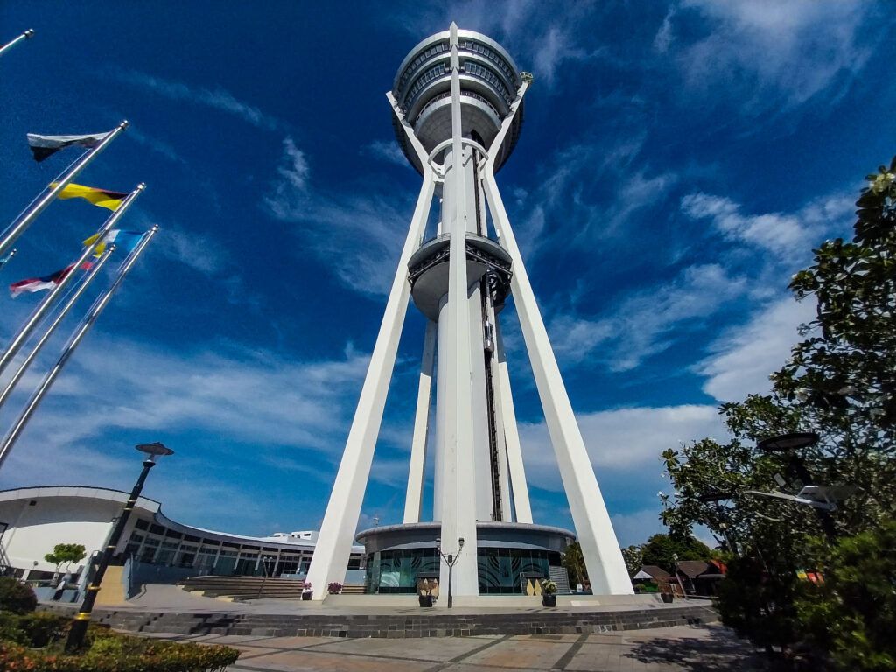
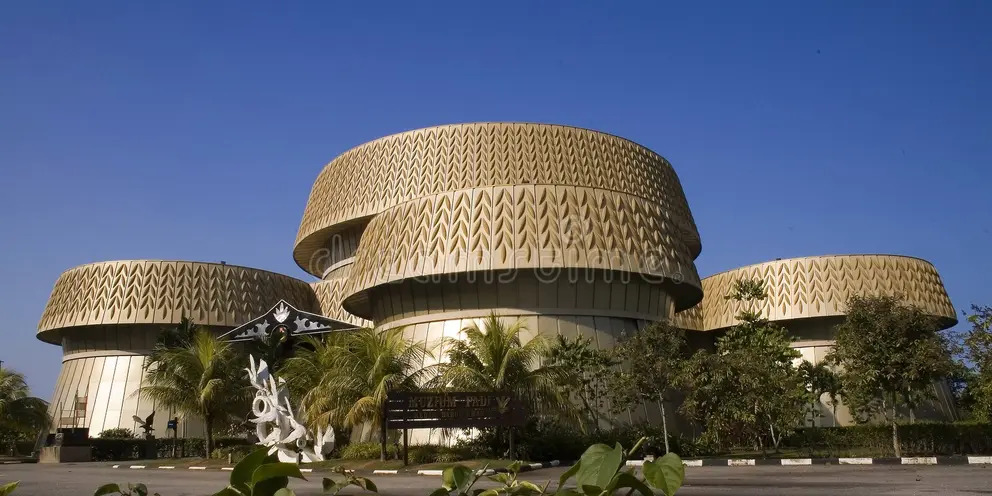

| Attraction | Category | Location | Main Feature |
|---|---|---|---|
| Zahir Mosque | Historical | City Centre | Moorish architecture with an intricate grand hall. |
| Menara Alor Setar | Landmark | City Centre | 165.5 m tower with an observation deck. |
| Kedah Paddy Museum | Cultural | Gunung Keriang | Rice-growing heritage with a large rotating mural. |
| Rumah Kelahiran Mahathir | Historical | Lorong Kilang Ais | Wooden birth home of Malaysia's 4th Prime Minister. |
| Balai Besar | Royal Heritage | City Centre | Royal audience hall with Malay wood carvings. |
Kedah Tourism Directory (external link, needs internet)
